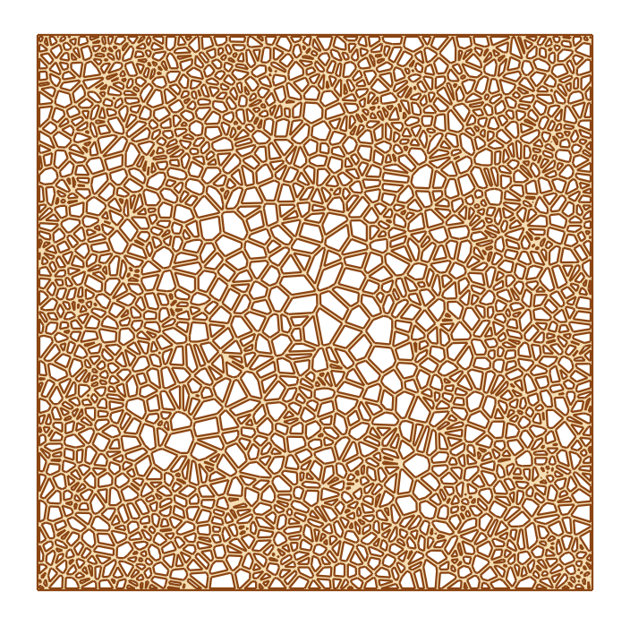
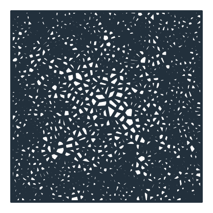
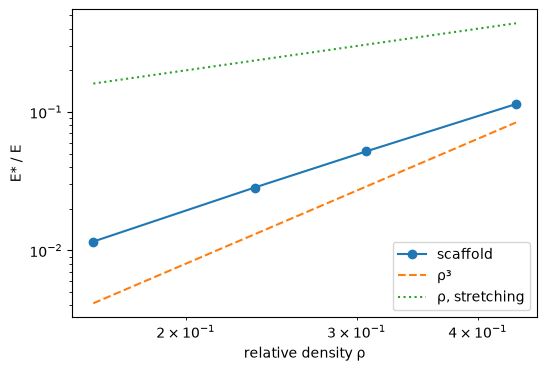
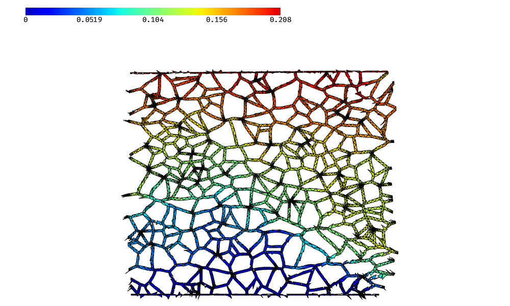

Voronoi bone scaffold
The example is a bone-like scaffold of 20 × 20 that uses the edges of a Voronoi diagram as struts, dense near the outside like cortical bone and open inside like the spongy core. With 2000 cells, some 6000 struts are united at once. Smaller scaffolds are then pressed in a linear elasticity solve in NGSolve, and their stiffness is compared with the scaling law of bending-dominated cellular solids. Lengths are in mm.

[1]:
import math
import random
import time
import numpy as np
from scipy.spatial import Voronoi
import matplotlib.pyplot as plt
import ngsolve as ngs
from ngsolve_webgpu.jupyter import Draw
import planex as px
The scaffold
The seeds are thinned towards the center. Mirrored copies across the four sides make the diagram’s cells end exactly on the square, so the cells along the sides share a frame of struts on the square’s edges. Every edge of the diagram inside the square becomes a strut, and the union is cut to the square, whose edges are named.
[3]:
size = 20.0
def seeds(n, graded=True, seed=1):
rng = random.Random(seed)
points = []
while len(points) < n:
x, y = rng.uniform(0, size), rng.uniform(0, size)
inner = min(x, y, size - x, size - y) / (size / 2)
if not graded or rng.random() < 1.2 - inner:
points.append((x, y))
return np.array(points)
def scaffold(p, thickness, sides=True):
mirrored = np.vstack([p, p * [-1, 1], p * [1, -1], [2 * size, 0] + p * [-1, 1], [0, 2 * size] + p * [1, -1]])
diagram = Voronoi(mirrored)
struts = []
for i, j in diagram.ridge_vertices:
if i < 0 or j < 0:
continue
a, b = diagram.vertices[i], diagram.vertices[j]
if not all(-1e-9 <= c <= size + 1e-9 for c in (*a, *b)):
continue
if not sides and (max(abs(a[0]), abs(b[0])) < 1e-9 or min(a[0], b[0]) > size - 1e-9):
continue
struts.append(px.Line(a, b).Offset(thickness / 2))
box = px.QuickSketch().Line(size, name="bottom").Turn(90).Line(size, name="right").Turn(90)
box = box.Line(size, name="top").Turn(90).Line(size, name="left").Face()
return struts, box
2000 cells
The struts are 0.12 thick. Every cell becomes a hole, except the few that are smaller than the thickness of a strut (Figure 1).
[4]:
struts, box = scaffold(seeds(2000), 0.12)
start = time.perf_counter()
bone = px.Unify(struts) * box
print(len(struts), "struts united and cut to the square in", round(time.perf_counter() - start, 3), "s")
print(len(bone.faces), "face,", sum(len(f.inner) for f in bone.faces), "holes from 2000 cells,", len(bone.edges),
"edges")
print("relative density", round(bone.mass / size**2, 3))
6001 struts united and cut to the square in 0.093 s
1 face, 1986 holes from 2000 cells, 10541 edges
relative density 0.461

Pressing
The test uses scaffolds with 300 cells of even size and open sides, with bone tissue in plane stress, the bottom held and the top pushed down by 1 %. The reaction at the top gives the scaffold’s apparent stiffness E. A structure whose struts bend instead of stretch loses stiffness with the cube of its relative density ρ, E ≈ C E ρ³ with C of order one, while a structure that only stretched would get E ρ. Bone tissue has a Young’s modulus E of 18 000 N/mm² and a Poisson’s ratio nu of
0.3.
[6]:
E = 18000.0
nu = 0.3
cells = seeds(300, graded=False)
def strain(w):
return ngs.Sym(ngs.Grad(w))
def stress(w):
e = strain(w)
return E / (1 - nu**2) * ((1 - nu) * e + nu * ngs.Trace(e) * ngs.Id(2))
def press(thickness):
struts, box = scaffold(cells, thickness, sides=False)
sample = px.Unify(struts) * box
mesh = ngs.Mesh(px.OCCGeometry(sample).GenerateMesh(maxh=0.6))
mesh.Curve(3)
fes = ngs.VectorH1(mesh, order=2, dirichletx="bottom", dirichlety="bottom|top")
u, v = fes.TnT()
a = ngs.BilinearForm(ngs.InnerProduct(stress(u), strain(v)) * ngs.dx).Assemble()
disp = ngs.GridFunction(fes)
disp.Set(ngs.CF((0, -0.01 * size)), definedon=mesh.Boundaries("top"))
with ngs.TaskManager():
disp.vec.data += a.mat.Inverse(fes.FreeDofs(), inverse="sparsecholesky") * (-a.mat * disp.vec)
reaction = disp.vec.CreateVector()
reaction.data = a.mat * disp.vec
force = {}
for side in ("top", "bottom"):
w = ngs.GridFunction(fes)
w.Set(ngs.CF((0, 1)), definedon=mesh.Boundaries(side))
force[side] = ngs.InnerProduct(w.vec, reaction)
density = sample.mass / size**2
modulus = -force["top"] / size / 0.01
print("strut", thickness, "rho", round(density, 3), "E*/E", round(modulus / E, 4),
"C", round(modulus / (E * density**3), 2), "top + bottom reaction", f"{force['top'] + force['bottom']:.1e}")
return density, modulus, mesh, disp
Check: for struts from 0.1 to 0.3 thick, C stays of order one, and the reactions at the top and the bottom balance:
[7]:
results = {t: press(t) for t in (0.1, 0.15, 0.2, 0.3)}
rho = np.array([r[0] for r in results.values()])
stiffness = np.array([r[1] / E for r in results.values()])
strut 0.1 rho 0.161 E*/E 0.0116 C 2.79 top + bottom reaction -5.5e-11
strut 0.15 rho 0.236 E*/E 0.0284 C 2.18 top + bottom reaction -1.7e-11
strut 0.2 rho 0.307 E*/E 0.0519 C 1.8 top + bottom reaction -2.4e-11
strut 0.3 rho 0.438 E*/E 0.1142 C 1.36 top + bottom reaction 9.1e-11
The stiffness against the density, on logarithmic axes, with the two laws:

The scaffold with struts of 0.2, pressed: its displacement, with the deformation magnified 10 times:
[9]:
density, modulus, mesh, disp = results[0.2]
Draw(disp, mesh, deformation=10 * disp)
